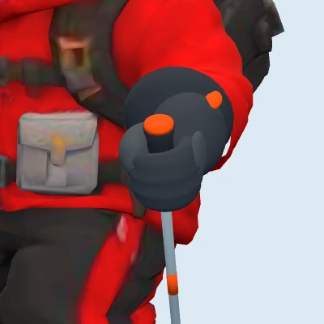
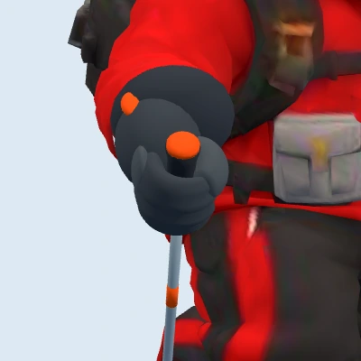
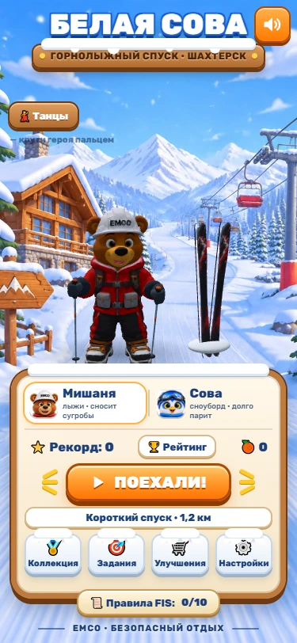
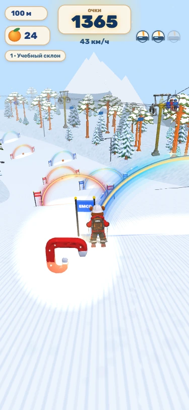

Как Мишаня держит палки
19 ноября · 2026-11-19d
Слева — стойка и работа локтей, справа — правая рука крупно в тот же момент. У рукоятки виден оранжевый колпачок над пальцами; древко выходит снизу.

Левая рука в повороте

Правая рука в прыжкеС игровой камеры

Приветствие в меню

На склоне